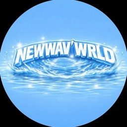

Arbre du tournoi
Fais glisser pour parcourir l’arbre · Pince l’écran ou utilise les boutons pour zoomer
100 %

Retour à l’accueilFais glisser pour parcourir l’arbre · Pince l’écran ou utilise les boutons pour zoomer